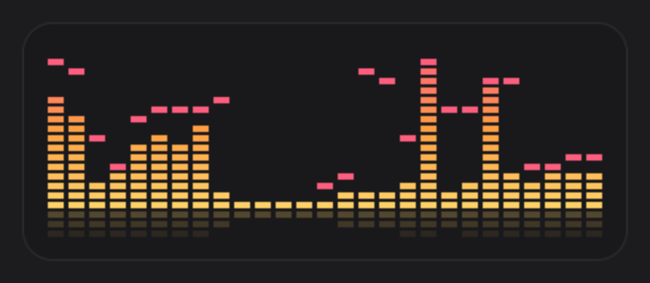
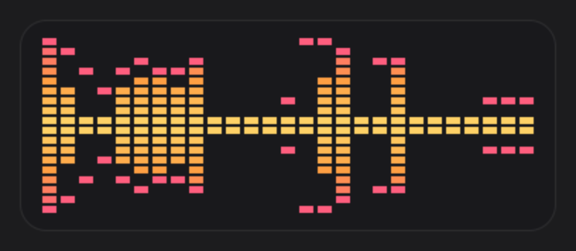
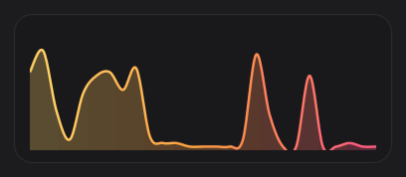

Tempo › Music visualizer
A music visualizer for Linux that stays out of the way
While something is playing, Tempo moves with the sound: ten small bars in the top bar, a thin line along it, or a floating visualizer on your desktop with segmented bars, falling peak caps and a reflection. When the music stops, it stops, and nothing is left running.
- Free and open source
- GNOME 42 to 50 on Ubuntu, Fedora, Debian, Arch and more
- 250 KB, nothing else installed

What you get
- Three ways to see your music: small bars next to the system rings, a level line along the whole top bar, or a floating panel that you place and size anywhere.
- A real spectrum: bass on the left, treble on the right, in your palette's colours. In the floating panel a wider window shows more bars (up to 64) and a taller one more segments.
- Works with what you already use: any player with the standard media controls, such as a browser playing YouTube or Spotify, the Spotify app, VLC or Rhythmbox, on PulseAudio or PipeWire.
- Tells you what is playing: rest the pointer on the bars for the song and the app; a click in the menu takes you there.
- Private: Tempo reads the sound going to your speakers, never the microphone. Nothing is saved and nothing is sent anywhere.



What it costs your computer
Measured with the project's own benchmark (make bench) at the default 8 updates a second, in percent of one processor core. Moving pictures are the one thing in Tempo that costs something, so the numbers are published.
| Level line along the top bar | 1.4 % |
| Small bars in the top bar | 2.1 % |
| Floating visualizer panel | 2.7 % |
| The sound recorder, while music is shown | 1 %, and 6 MB of memory |
| Nothing is playing, or the screens are off | Nothing runs |
Each bar is drawn once; after that your graphics card only uncovers more or less of it. The sound is looked at once per frame, and the update rate is yours to set, from 5 to 30 a second. How Tempo stays light.
Turn it on
- Install Tempo with the buttons above (the install guide has every step).
- Click Tempo in the top bar and switch on Music visuals. Play something: the bars appear.
- For the floating panel, open Floating panels in the same menu and switch on Visualizer panel. Its design (bars, mirror, wave) is under Settings.
- If nothing moves, install the small
parectool:sudo apt install pulseaudio-utilson Ubuntu and Debian,sudo dnf install pulseaudio-utilson Fedora. Most GNOME desktops already have it.
Questions
Is there a music visualizer for GNOME on Ubuntu or Fedora?
Yes. Tempo is a GNOME Shell extension with a music visualizer built in: small bars or a level line in the top bar, or a floating visualizer panel on the desktop. It works on GNOME 42 to 50.
Does it work with Spotify, YouTube and VLC?
Yes, with any player that supports the standard media controls. If the player shows up in GNOME's media controls in the notification list, Tempo follows it. That covers browsers, the Spotify app, VLC, Rhythmbox and most others.
Does it work with PipeWire?
Yes, with PipeWire and with PulseAudio. Tempo uses the small parec tool, which talks to both.
Does it listen to my microphone?
No. It reads only the sound going to your speakers, turns it into bar heights in memory and throws it away. You can check with pactl list source-outputs: the stream is called Tempo and is attached to your speakers.
How much processor time does it use?
At the default 8 updates a second: 1.4 % of one processor core for the level line, 2.1 % for the small bars and 2.7 % for the floating panel, plus about 1 % for the sound recorder. While nothing is playing, nothing runs.
The bars do not move. What now?
Check that Music visuals is switched on, that sound is really playing, and that the parec tool is installed (package pulseaudio-utils). Games and apps without media controls do not start the bars.
Also in Tempo
Tempo is one small GNOME Shell extension. Every part has its own switch, and a part that is off costs nothing.
System monitor
CPU and memory as two small rings, with the details one click away.
Internet speed
Download and upload speed in the top bar, in a width that never changes.
CPU temperature
The processor's temperature in the top bar, amber and red when it gets hot.
Fans
Every fan and its speed, and an optional cooler fan curve for late starters.
Desktop widgets
Floating panels for your desktop: system readings and a music visualizer.